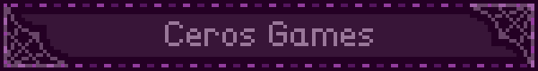

Hola, me llamo CerosDev, bienvenido a la página principal de
mi sitio, soy un desarrollador de videojuegos indie, actualmente
trabajo con GameMakerStudio pero últimamente estoy probando
GBstudio y tengo experiencia con ClickteamFusion.
En esta página estaré publicando cosas relacionadas al desarrollo de mis juegos, como diarios de desarrollo que simples post donde explique como agrego alguna mecánica(a detalle) o como soluciono
algún problema.
actualmente esta página web se encuentra en desarrollo y hasta el
momento esto es todo lo que tengo, pronto añadiré una página aparte
para cada juego que vaya desarrollando y desde aquí se podrá acceder, gracias.

Este gif lo hice en la página Blinkies Cafe, me encantan esas páginas web que parecen blogs antiguos, asegúrate de visitarlos.